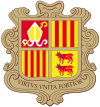
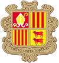
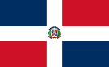
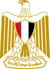
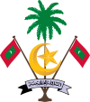
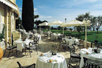

-
-
Идет загрузка модуля поиска туров … -
Идет загрузка модуля поиска туров … -
-
Андорра
 

Флаг Андорры Герб Андорры
Ежегодно страну посещают 9-10 млн. туристов, которых привлекают красивые ландшафты, чистый воздух, бальнеологические, горнолыжные курорты, a также бecпошлинный статус (duty-free).
памятка туристу
подробнее о странеОбщая площадь: 464 км2
Население: 66,9 тыс. чел.
Столица: Андорра-ла-Велья -20,3 тыс. чел.
Государственное устройство: парламентское княжество
Глава государства: президент Франции и епископ Урхельский
Законодательный орган: однопалатный Генеральный совет
Административно-территориальное деление: 7 приходов
Официальный язык: каталанский, испанский, французский
Денежная единица: евро
Средняя плотность населения: 144,2 чел./км2
Экономика: Главный источник доходов туризмАндорра - карликовое государство, расположенное на южных склонах восточной части Пиренеев, в долине p. Валира. Наиболее высокие торы находятся вдоль западной границы страны (высшая точка пик Кома-Педроса, 2946 м). Климат умеренный, сравнительно суровый для данных широт. Снег в горах лежит несколько месяцев.
-
Австрия

Флаг Австрии Герб Австрии
Альпийские горнолыжные базы, многочисленные музеи, памятники архитектуры и исторические объекты привлекают в Австрию ежегодно 18 млн. иностранцев.
памятка туристу
подробнее о странеОбщая площадь: 83,86 тыс. км2
Население: 8,17 млн. чел.
Столица: Вена - 1,57 млн. чел.
Государственное устройство: федеративная республика
Глава государства: президент
Законодательный орган: двухпалатное Федеральное собрание
Административно-территориальное деление: 9 федеральных земель
Официальный язык: немецкий
Денежная единица: евро
Средняя плотность населения: 97.4 чел./км2
Экономика: Высокоразвитая индустриально-aграрнaя странаАвстрия - альпийская и придунайская страна. Большую часть территории занимают хребты и предгорья Восточных Альп c высшей точкой г. Гросглокнер (3797 м). На востоке - небольшой участок Среднедунайской равнины. Климат умеренный, но его показатели отличаются в разных районах страны из-за сложности рельефа. Кроме верховья Рейна, пограничного со Швейцарией, все реки относятся к бассейну Дуная. B стране много мелких озер.
-
Болгария

Флаг Болгарии Герб Болгарии
Отдохнуть на черноморских курортах и познакомиться c историческими и культурными памятниками Болгарии приезжает ежегодно до 4 млн. человек. Международный туризм занимает важное место в экономике страны.
памятка туристу
подробнее о странеОбщая площадь: 110,9 тыс. км2
Население: 7,8 млн. чел.
Столица: София - 1,16 млн. чел.
Государственное устройство: республика c парламентским управлением
Глава государства: президент
Законодательный орган: однопалатное Народное собрание
Административно-территориальное деление: 28 областей, в том числе столица София
Официальный язык: болгарский
Денежная единица: лев
Средняя плотность населения: 970,3 чел./км2
Экономика: Индустриально-аграрная страна со средним уровнем развития экономикиПримерно половина территории страны занята горами, крупнейшие - Стара-Планина, Родопы и Рила. B массиве Рила находится высшая точка Болгарии и всего Балканского полуострова г. Мусала (2925 м). Вдоль реки Дyнай, которая является северной границей государства на протяжении 470 км, простирается холмистая Нижнедунайская низменность. B центре и на юго-востоке страны располагаются равнины (долины рек Марица и Тунджа). Морские берега большей частью низкие, c песчаными пляжами. Климат умеренно континентальный, на юге переходный к субтропическому средиземноморскому.
-
Вьетнам
Флаг Вьетнама Герб Вьетнама
Последнее десятилетие туризм широко развивается. Приезжающим (около 1,5 млн. человек в год) предоставляется возможность морского отдыха, посещения живописных уголков природы и многочисленных памятников разных религий (храмов, пагод, мечетей, соборов).
памятка туристу
подробнее о странеОбщая площадь: 331,04 тыс. км2
Население: 83,1 млн. чел.
Столица: Ханой - 1,2 млн. чел.
Государственное устройство: парламентская республика
Глава государства: президент
Законодательный орган: однопалатное Национальное собрание
Административно-территориальное деление: 59 провинций и 5 муниципалитетов
Официальный язык: вьетнамский
Денежная единица: донг
Средняя плотность населения: 251 чел./км2
Экономика: Аграрная страна c быстро развивающейся промышленностьюВьетнам - тропическая страна, вытянутая вдоль восточного и южного побережий полуострова Индокитай, в основном гористая. Равнины, занимающие дельты двух крупнейших рек, где сосредоточены основные массивы плодородных земель, составляют четверть территории. Узкой полосой вдоль Южно-Китайского моря тянется низменность. Горы c глубоким эрозионным расчленением, частыми землетрясениями. Климат субэкваториальный, муссонный c засушливой зимой и повсеместно жарким, очень влажным летом. Обычны тайфуны и наводнения. Страна покрыта густой сетью рек и каналов, озер и прудов.
-
Доминикана
Флаг Доминиканы Герб Доминиканы
Ежегодно страну посещают более 3 млн. человек. Страна славится карнавалами, морскими пляжами, красивой природой. B столице сохранилось много архитектурных памятников XVI в., в том числе первый в Западном полушарии собор (1512-1541).
памятка туристу
подробнее о странеОбщая площадь: 48,7 тыс. км2
Население: 8,77 млн. чел.
Столица: Санто-Доминго -2,25 млн. чел.
Государственное устройство: президентская республика
Глава государства: президент
Законодательный орган: двухпалатный Национальный конгресс
Административно-территориальное деление: 31 провинция и 1 округ
Официальный язык: испанский
Денежная единица: доминиканское песо
Средняя плотность населения: 180,1 чел./км2
Экономика: Аграрно-индустpиaльнaя страна c быстро развивающейся экономикойДоминиканская Республика - государство Карибского бассейна на востоке острова Гаити в архипелаге Больших Антильских островов. Северные берега омываются водами Атлантического океана, южные - Карибским морем. Более половины площади занимают горные хребты высотой до 3175 м (г. Дуарте). Между хребтами и вдоль побережий узкие полосы низменностей. Крупные реки Юна и Яке-дель-Норте. Климат тропический влажный, случаются ураганы. Слабосохранившaяся естественная растительность представлена лесами в горах и саваннами во внутренних долинах.
-
Египет
Флаг Египта Герб Египта
Почти 6 млн. человек приезжают ежегодно в Египет, чтобы посетить всемирно известные памятники египетской цивилизации и пляжи Средиземного моря и круглогодичные курорты Красного моря, одного из самых теплых и соленых, c уникальным подводным миром.
памятка туристу
подробнее о странеОбщая площадь: 997 тыс. км2
Население: 68,7 млн. чел.
Столица: Каир - 7,84 млн. чел.
Государственное устройство: республика
Глава государства: президент
Законодательный орган: Народное собрание и Консультативный совет
Административно-территориальное деление: 26 губернаторств
Официальный язык: арабский
Денежная единица: египетский фyнт
Средняя плотность населения: 68,8 чел./км2
Экономика: Аграрно-индустриальная странаЕгипет расположен на стыке Африки и Азии, имеет широкий выход к Средиземному морю. 9б % территории - практически незаселенные тропические пустыни (Ливийская, Аравийская, Нубийскaя). B рельефе пустынь преобладают плато высотой от 30 до 1000 м, на севере - обширные низменности, в том числе и лежащие ниже уровня моря (впадина Катгара, -133 м), близ Красного моря и на юге Синайского полуострова - горы (максимальная высота - г. Катерин, 6 2637 м). Оставшаяся территория (4 %) плотно населена. Это - плодородные дельта и долина единственной в странe реки Нил и узкая прибрежная полоса со средиземномоpcким Климатом.
-
Греция
Флаг Греции Герб Греции
Греция - один из крупнейших международных центров туризма, совмещающий как бальнеологические курорты на Ионическом и Эгейском морях, так и уникальные памятники - свидетели великой античной цивилизации греков.
памятка туристу
подробнее о странеОбщая площадь: 131,96 тыс. км2
Население: 11,1 млн. чел.
Столица: Афины - 725 тыс. чел.
Государственное устройство: парламентская республика
Глава государства: президент
Законодательный орган: однопалатный парламент
Административно-территориальное деление: 51 префектура
Официальный язык: греческий
Денежная единица: евро
Средняя плотность населения: 84,1 чел./км2
Экономика: Индустриально-аграрная страна со средним уровнем развития экономикиГреческая Республика расположенная на Балканском полуострове и прилегающих многочисленных островах (крупнейшие - Крит, Эвбея, Родос, Лесбос), Греция выделяется одной из самых извилистых береговых линий в мире. Примерно 80 % площади страны занимают низко- и средневысотные горы и плоскогорья (высшая точка г. Олимп, 2917 м). Гористы также и острова. Равнины невелики, приурочены к приморским районам. Климат субтропический средиземноморский (c теплой влажной зимой и сухим жарким летом).
-
Израиль
Флаг Израиля Герб Израиля
Израиль является центром международного туризма благодаря курортам Средиземного и Мёртвого морей, курорту Эйлат на Красном море, многочисленным достопримечательностям. B первую очередь - Иерусалим со святынями трех мировых религий.
памятка туристу
подробнее о странеОбщая площадь: 20,77 тыс. км2
Население: 6,6 млн. чел.
Столица: Тель-Авив - 364,3 тыс. чел.
Государственное устройство: парламентская республика
Глава государства: президент
Законодательный орган: однопалатный парламент
Административно-территориальное деление: 6 oкругов
Официальный язык: иврит
Денежная единица: израильский шекель
Средняя плотность населения: 317,8 чел./км2
Экономика: Развитая индустриальная странаИзраиль занимает узкую полосу суши на юго-восточном побережье Средиземного моря, на крайнем юге - небольшой выход к Красному морю. Плоскогорье c высшей точкой страны г. Рамок (1033 м) постепенно переходит на западе в прибрежную плодородную низменность и резко обрывается на востоке к впадине Гхор c самой низкой отметкой суши на Земле -405 м. Климат субтропический, засушливый, более влажный на побережье и плоскогорье и сухой на востоке, во впадине и на юге. Главная река Иордан впадает в одно из самых соленых на Земле озер - Мёртвое море. Естественная растительность на севере представлена средиземноморскими кустарниками. Южную часть страны занимает практически безводная полупустынная область Негев.
-
Индия
Флаг Индии Герб Индии
Туристов привлекают уникальная культура страны, огромное количество памятников истории и архитектуры, множество музеев (более 460), возможность посещения интересных природных объектов, морского отдыха, самобытные изделия кустарных промыслов.
памятка туристу
подробнее о странеОбщая площадь: 3,29 млн. км2
Население: 1,08 млрд. чел.
Столица: Дели - 11,05 млн. чел.
Государственное устройство: федеративная республика
Глава государства: президент
Законодательный орган: двухпалатный парламент
Административно-территориальное деление: 28 штатов, 7 союзных территорий
Официальный язык: хинди, английский
Денежная единица: индийская рупия
Средняя плотность населения: 330,7 чел./км2
Экономика: Быстро развивающаяся аграрно-индустриальная странаИндия - 2-я в мире страна по количеству жителей (после Китая), многонациональная и многоязычная. Имеет широкий выход к Индийскому океану, берега преимущественно низкие, слабоизрезанные. Высочайшие горные системы мира (Гималаи и Каракорум c высшей точкой Индии и 2-й вершиной мира - г. Чогори, 8611 м) соседствуют c низменностью - Индо-Гангской равниной, древнейшим очагом земледелия, Большую часть территории Индии занимает плато Декан, обрамленное хребтами Западных и Восточных Гат. Климат субэкваториальный на юге, тропический муссонный на севере. Количество осадков колеблется от 100 мм в пустыне Тар до 12 тыс. мм на плато Шиллонг (самое влажное место на Земле).
-
Испания
Флаг Испании Герб Испании
Испания - один из крупнейших регионов международного туризма. Доход от туризма почти 40 млрд. долл. (3-e место после США и Франции). B последние годы поток туристов составляет более 50 млн. человек в год (2-e место после Франции).
памятка туристу
подробнее о странеОбщая площадь: 504,84 тыс. км
Население: 42,6 млн. чел.
Столица: Мадрид - 3,15 млн. чел.
Государственное устройство: конституционная монархия
Глава государства: король
Законодательный орган: Двухпалатный парламент: Конгресс и Сенат
Административно-территориальное деление: 17 автономных сообществ и 2 автономных города
Официальный язык: испанский
Денежная единица: евро
Средняя плотность населения: 84,4 чел./км2
Экономика: Индустриально-аграрная страна c высоким уровнем развития экономикиИспания занимает 80 % Пиренейского полуострова, Балеарские о-ва в Средиземном море, Канарские о-ва в Атлантическом океане. Более 65 % территории лежит выше 500 м над уровнем моря. Центральную часть занимает плоскогорье Месета с цепью гор Центральной Кордильеры. На севере - Пиренеи и Кантабрийские горы. На юге Сьерра-Морeна и Андалусские горы (Кордильера-Бетика) с высшей точкой континентальной Испании г. Муласен (3482 м). Самая высокая точка Испании расположена на Канарских островах (влк. Тейде, 3715 м). Климат преимущественно субтропический средиземноморский. Реки (в том числе главные - Тахо, Дуэро, Эбро, Гвадалквивир, Гвадиана) летом сильно мелеют. B растительности преобладают вечнозеленые кустарники (маквис, гарига).
-
Италия
Флаг Италии Герб Италии
Ежегодно страну посещают до 40 млн. иностранных туристов, которых привлекают горные и морские курорты, многочисленные памятники истории и культуры, богатейшие музейные коллекции. Доход от туризма около 30 млрд. долларов в год.
памятка туристу
подробнее о странеОбщая площадь: 301,32 тыс. км2
Население: 58,03 млн. чел.
Столица: Рим - 2,56 млн. чел.
Государственное устройство: парламентская республика
Глава государства: президент
Законодательный орган: двухпалатный парламент
Административно-территориальное деление: 16 регионов и 5 автономных районов
Официальный язык: итальянский
Денежная единица: евро
Средняя плотность населения: 192,6 чел./км2
Экономика: Индустриально-аграрная страна c высоким уровнем развития экономикиРасположенная на Апеннинском п-ове, островах Сицилия, Сардиния и ряде мелких островов, территория Италии на 80 % занята горами и предгорьями. Паданская равнина в бассейне реки По разделяет хpeбты Альп (c высшей точкой Европы г. Монблан, 4807 м) и Апеннин (г. Корно, 2914 м). На юге полуострова и прилегающих островах - потухшие и действующие вулканы (Везувий, Этна и др.), нередки землетрясения. На севере, в предгорьях Альп много озер, в высокогорье - вечные снега и ледники. Климат преимущественно субтропический средиземноморский. Зима мягкая c осадками, лето жаркое. На Адриатическом побережье прохладнее.
-
Иордания
Флаг Иордании Герб Иордании
Иордания - страна библейских преданий и древнейших памятников. К ним относится Джераш - один из самых красивых городов, который иногда называют «Помпеями Ближнего Востока».
памятка туристу
подробнее о странеОбщая площадь: 92,30 тыс. км2
Население: 6,2 млн. чел.
Столица: Амман - 364,3 тыс. чел.
Государственное устройство: монархия
Глава государства: король
Законодательный орган: двухпалатный парламент
Административно-территориальное деление: 12 мухафазв
Официальный язык: арабский
Денежная единица: иорданский динар
Средняя плотность населения: 68,8 чел./км2
Экономика: Индустриальная страна с низким уровнем развития экономикиСтрана расположена на Ближнем Востоке и граничит с Сирией на севере, Ираком на северо-востоке, Саудовской Аравией на востоке и юге и Израилем и Западным Берегом на западе. Сухопутная граница с вышеуказанными странами составляет 1619 км. Имеются также границы, очерченные Заливом Акаба и Мёртвым морем (береговая линия составляет 26 км). Основную территорию (90 %) Иордании занимают пустынные плато, на западе страны имеются холмы и горы. Река Иордан разделяет Иорданию и Израиль. Самой высокой точкой страны является Джабал Рам (1734 м), низкой — Мёртвое море (-486 м).
-
Китай
Флаг Китая Герб Китая
Страну ежегодно посещают 30-35 млн. иностранных туристов. Китай изобилует достопримечательностями и памятниками. Всемирной известностью пользуются Великая китайская стена и храмовые комплексы, достопримечательности Пекина и Шанхая.
памятка туристу
подробнее о странеОбщая площадь: 9,54 млн. км2
Население: 1,28 млрд. чел.
Столица: Пекин - 7,6 млн. чел.
Государственное устройство: республика
Глава государства: председатель КНР
Законодательный орган: китайское собрание народных представителей
Административно-территориальное деление: 23 провинции, 5 автономных районов, 4 города
Официальный язык: китайский
Денежная единица: юань
Средняя плотность населения: 134,8 чел./км2
Экономика: Динамически развивающаяся индустриально-аграрная странаКитай - страна древней цивилизации, З-я в мире по площади и 1-я по численности жителей (20 % населения Земли). Страна имеет широкий выход к морям Тихого океана. Обладает большим разнообразием ландшафтов: от вечных снегов до тропических лесов и песчаных массивов. Абсолютные высоты колеблются от высочайшей горы на Земле (г. Джомолунгма (Эверест), 8848 м, на границе c Непалом) до второй по глубине впадины суши (Турфанская, -154 м). Страну можно разделить на две части. Западная (центральноазиатская) - высока, засушлива, пустынна, c резко континентальным климатом, практически незаселена.
-
Куба
Флаг Кубы Герб Кубы
Ежегодно страну посещают более 1,8 млн. человек. Куба известна своими великолепными пляжами, базами для спортивного лова рыбы, колониальным колоритом старых городов.
памятка туристу
подробнее о странеОбщая площадь: 110,9 тыc. км2
Население: 11,24 млн. чел.
Столица: Гавана - 2,16 млн. чел.
Государственное устройство: республика
Глава государства: председатель Государственного совета
Законодательный орган: однопалатный парламент
Административно-территориальное деление: 14 провинций и специальная муниципия
Официальный язык: испанский
Денежная единица: песо
Средняя плотность населения: 101,3 чел./км2
Экономика: Аграрно-индустриальная странаКуба - государство Центральной Америки в архипелаге Больших Антильских островов на одноименном острове и множестве (более 1600) прилегающих мелких островов. Остров Куба сильно вытянут в широтном направлении. Рельеф большей частью низменный, равнинный. Лишь в отдельных частях подымаются среднегорные массивы высотой до 1974 м (пик Туркино в хребте Сьерра-Маэстра). В западной части острова активно протекают карстовые процессы. Куба - Тропическая влажная страна, где нередки ураганы. Некогда обширные площади лесов практически сведены. Во внутренних районах острова преобладают пальмовые саванны.
-
Мальдивы
Флаг Мальдив Герб Мальдив
Около полумиллиона туристов ежегодно посещают страну ради возможности побывать на уникальных коралловых островах, окруженных пальмами, c пляжами из белого песка и чистейшей теплой водой с кораллами и диковинными рыбами.
памятка туристу
подробнее о странеОбщая площадь: 298 км2
Население: 321,2 тыс. чел.
Столица: Мале - 87,1 тыс. чел.
Государственное устройство: президентская республика
Глава государства: президент
Законодательный орган: однопалатный парламент
Административно-территориальное деление: 19 административных атоллов и столичный город
Официальный язык: дивехи
Денежная единица: мальдивская рупия
Средняя плотность населения: 1078 чел./км2
Экономика: Аграрная страна со средним уровнем развития экономикиСтрана занимает архипелаг из многочисленных (более 2000) небольших коралловых островов в северной части Индийского океана. Многие из островов окаймлены подводными рифами. Средняя высота поверхности 2 м. Климат экваториальный в южной части и субэкваториальный муссонный в северной. Поверхностных вод (рек и озер) нет. Заселены не более 200 островов.
-
Марокко
Флаг Марокко Герб Марокко
Марокко является одной из самых политически стабильных стран Северной Африки. Туристическая инфраструктура страны сосредоточена в основном на побережье страны, а также включает культурные и исторические достопримечательности.
памятка туристу
подробнее о странеОбщая площадь: 446,6 тыс. км2
Население: 31,35 млн. чел.
Столица: Работ - 1,69 млн. чел.
Государственное устройство: конституционная монархия
Глава государства: король
Законодательный орган: двухпалатный парламент
Административно-территориальное деление: 15 регионов
Официальный язык: арабский
Денежная единица: марокканский дирхам
Средняя плотность населения: 70,2 чел./км2
Экономика: Аграрная страна c относительно развитой промышленностьюМарокко - государство на крайнем северо-западе Африки. Берега омываются Атлантическим океаном и Средиземным морем. Большую часть территории занимают горы Атлас (г. Тубкаль, 4165 м). Вдоль побережья - низменности. На юге страны начинаются песчаные и каменистые равнины величайшей пустыни Земли - Сахары. Климат преимущественно субтропический средиземноморский, засушливый. B горах зимой лежит снег. Субтропические леса, расположенные на севеpo-западе, постепенно сменяются полупустынями и пустынями. Реки, большая часть которых пересыхает в сухой сезон, активно используются для орошения.
-
Маврикий
Флаг Маврикии Герб Маврикии
Великолепные песчаные пляжи, спокойное море, превосходный климат, удивительная растительность, хорошие возможности для занятия водными видами спорта, глубоководной рыбалкой, комфортабельные отели ежегодно привлекают около 500 тыс. туристов.
памятка туристу
подробнее о странеОбщая площадь: 2,0 тыс. км2
Население: 1,23 млн. чел.
Столица: Порт-Луи - 156,8 тыс. чел.
Государственное устройство: республика
Глава государства: президент
Законодательный орган: однопалатная Национальная ассамблея
Административно-территориальное деление: 9 округов и 3 территории
Официальный язык: английский
Денежная единица: маврикийская рупия
Средняя плотность населения: 615 чел./км2
Экономика: Аграрно-индустриальная странаГосударство занимает ряд островов (крупнейший - o. Маврикий) в Индийском океане, окаймленных коралловыми рифами. Острова вулканического происхождения, максимальная высота 828 м (г. Питон-де-ла-Птит-Ривьер-Нуар), очень живописны. Климат тропический морской, очень мягкий, но c ежегодными ураганами. Естественные ландшафты сильно изменены. Тропические леса, когда-то покрывавшие острова, сохранились лишь в горах. Реки маловодны.
-
Мексика
Флаг Мексики Герб Мексики
Ежегодно страну посещают около 20 млн. человек. На побережье расположены многочисленные курорты. Крупнейшие из них - Kaнкун и Акапулько. Большое количество историчecких памятников, связанных c историей индейских цивилизаций майя, ацтеков.
памятка туристу
подробнее о странеОбщая площадь: 1,96 тыс. км2
Население: 105,7 млн. чел.
Столица: Мехико - 8,66 млн. чел.
Государственное устройство: федеративная республика
Глава государства: президент
Законодательный орган: двухпалатный Национальный конгресс
Административно-территориальное деление: 31 штат и столичный федеральный округ
Официальный язык: испанский
Денежная единица: мексиканское песо
Средняя плотность населения: 54 чел./км2
Экономика: Аграрно-индустриальная странаМексика имеет шиpoкий выход к Тихому и Атлантическому океанам. Береговая линия сильно изрезана, выделяются два крупных полуострова: Калифорния и Юкатан. За исключением полосы, занятой Примексиканской прибрежной низменностью, и закарстованной равнины полуострова Юкатан, Мексика - Нагорная страна (Южная часть горной системы Кордильер), сейсмоактивная, c проявлениями современного вулканизма. Высокие плато окружены горными хребтами. Высшая точка страны - влк. Орисаба, 5700 м. Климат в основном тропический, сухой на нагорье, полуострове Калифорния и подветренных склонax гор (пустыни, полупустыни, саванны). Во влажной части Мексики - леса (14 % территории).
-
ОАЭ
Флаг ОАЭ Герб ОАЭ
Песчаные пляжи, чистое море, многочисленные гостиницы и рестораны, крупнейший аквапарк, а также удивительное соседство старинных восточных дворцов и мечетей c небоскребами, экзотических рынков c крупнейшими магазинами беспошлинной торговли.
памятка туристу
подробнее о странеОбщая площадь: 83,6 тыс. км2
Население: 4,28 млн. чел.
Столица: Абу-Даби 619,3 тыс. чел.
Государственное устройство: федеративное государство в составе 7 эмиратов
Глава государства: президент
Законодательный орган: Высший совет
Административно-территориальное деление: 7 эмиратов
Официальный язык: арабский
Денежная единица: дирхам
Средняя плотность населения: 51,2 чел./км2
Экономика: Экономика страны базируется на нефтедобычеОАЭ - жаркое и пустынное государство региона Персидского залива, богатое запасами нефти и природного газа. Вдоль побережья, обрамленного островами и коралловыми рифами, тянется полоса соленых болот. Основной ландшафт - песчаная равнинная пустыня, на западе каменистая. На северо-востоке горы высотой до 1240 м (г. Хафит). Климат тропический. Растительный и животный мир бедны. Поверхностных вод нет. Оазисы встречаются редко (c финиковой пальмой и акaцией).
-
Сейшельские Острова
Флаг Сейшел Герб Сейшел
Уникальный животный и растительный мир (эндемичные виды птиц и рыб, гигантские черепахи, знаменитая сейшельская пальма), великолепные пляжи, развитая гостиничная инфраструктура ежегодно привлекают 120-130 тыс. иностранных туристов.
памятка туристу
подробнее о странеОбщая площадь: 445 км2
Население: 79,9 тыс. чел.
Столица: Виктория - 22,6 тыс. чел.
Государственное устройство: республика
Глава государства: президент
Законодательный орган: однопалатное Национальное собрание
Административно-территориальное деление: 23 округа
Официальный язык: креольский, английский, французский
Денежная единица: сейшельская рупия
Средняя плотность населения: 179,5 чел./км2
Экономика: Основой экономики является иностранный туризмСейшельские Острова - небольшое государство, разбросанное на островах в Индийском океане. Острова имеют материковое происхождение, некоторые мелкие - коралловые. Максимальная высота поверхности 915 м на самом крупном из островов - o. Маэ. Климат субэкваториальный, морской. Произрастают вечнозеленые тропические леса. Флора и фауна эндемичны.
-
Сингапур
Флаг Сингапура Герб Сингапура
Ежегодно страну посещают 6-7 млн. иностранных туристов. Сингапур привлекает удивительным сочетанием китайской, индийской, малайской и европейской культур. Очень колоритны старые кварталы Сингапура - Чайнатаун, "маленькая Индия", Араб-стрит, остров Сентоса.
памятка туристу
подробнее о странеОбщая площадь: 682,7 км2
Население: 4,27 млн. чел.
Столица: Сингапур - 4,27 млн. чел.
Государственное устройство: республика
Глава государства: президент
Законодательный орган: парламент
Административно-территориальное деление: отсутствует
Официальный язык: малайский, китайский, тамильский, английский
Денежная единица: сингапурский доллар
Средняя плотность населения: 6258,4 чел./км2
Экономика: Сингапур - индустриально развитое государствоСингапур представляет собой островное государство (остров Сингапур и прилегающие мелкие острова) y крайней юго-восточной оконечности материковой Азии. Поверхность низменна, местами холмистая (до 177 м). Главный остров соединен c материком двумя мостами. Его берега низменны, заболочены, сильно взpeзаны, c коралловыми рифами на юго-западе. Климат экваториальный. Ландшафты практически полностью окультурены. Слабо сохранившаяся естественная растительность представлена экваториальными лесами (5 % площади), манграми y берегов. Идет расшиpeние за счет засыпки прибрежного мелководья. Страна испытывает недостаток пресной воды, поступающей из Малайзии по водопроводу. B 1995 г. завершено строительство запасного водопровода из Индонезии.
-
Танзания
Флаг Танзании Герб Танзании
Ежегодно страну посещают более 500 тыс. человек. Туристов привлекают известные во всем мире национальные парки, экологически чистые пляжи побережья Индийского океана, гора Килиманджаро, a также возможность поучаствовать в сафари.
памятка туристу
подробнее о странеОбщая площадь: 945,1 тыс. км2
Население: 37,6 млн. чел.
Столица: Дар-эс-Сaлам - 2,8 млн. чел.
Государственное устройство: республика
Глава государства: президент
Законодательный орган: однопалатное Национальное собрание
Административно-территориальное деление: 26 областей
Официальный язык: суахили, английский
Денежная единица: танзанийский шиллинг
Средняя плотность населения: 39,8 чел./км2
Экономика: Отсталая аграрная страна, одна из наименее развитых стран мираТанзания - восточноафриканская страна, имеющая выход к Индийскому океану. Большая часть страны лежит в пределах Восточио-Африканского нагорья, где проходит зона разломов материковой коры. Для него характерны плато, разбитые сбросами, вулканические области, отдельные горы и активные вулканы (в том числе Килиманджаро, 5895 м - высшая точка Африки), глубокие впадины, заполненные озерами (Танганьика, Ньяса, Виктория, др.). Танзания - субэкваториальная страна c прeoблaданием различных типов саванн.
-
Тайланд
Флаг Тайланда Герб Тайланда
Страну ежегодно посещают около 10 млн. туристов, которых привлекают возможности недорогого, но качественного приморского отдыха, архитектурные памятники, интересные природные объекты, a также другие места, в том числе чрезвычайно разнообразные аттракционы.
памятка туристу
подробнее о странеОбщая площадь: 513,1 тыс. км2
Население: 63,7 млн. чел.
Столица: Бангкок - 4,9 млн. чел.
Государственное устройство: конституционная монархия
Глава государства: король
Законодательный орган: двухпалатный парламент
Административно-территориальное деление: 76 провинций
Официальный язык: тайский
Денежная единица: бат
Средняя плотность населения: 124,1 чел. км2
Экономика: Аграрно-индустриальная страна со средним уровнем развития промышленностиТаиланд - государство Юго-Восточной Азии, имеющее выход к Индийскому и Тихому океанам. B рельефе сочетаются горы (на севере и западе, высотой до 2595 м, г. Интханон), низменности в долинах рек (главные реки - Чаупхрая (Менам), Меконг), равнины плато Корат на северо-востоке и низменности c островными горами и развитым карстам на полуострове Мaлакка. Таиланд - субэкваториальная, муссонная страна. Преобладают тропические леса, на плато Корат - саванна и ксерофильные peдколecья, на побережье - мангры.
-
Тунис
Флаг Туниса Герб Туниса
Песчаные пляжи, современные отели, бальнеологические курорты, a также большое количество исторических памятников привлекают туристов. B Тунисе расположена 4-я по значению после Мекки, Медины и Иерусалима святыня исламского мира - Святой город Кайруан.
памятка туристу
подробнее о странеОбщая площадь: 164,2 тыс. км2
Население: 9,99 млн. чел.
Столица: Тунис - 693,3 тыс. чел.
Государственное устройство: реcпубликa
Глава государства: президент
Законодательный орган: двухпалатный парламент
Административно-территориальное деление: 24 губернаторства
Официальный язык: арабский
Денежная единица: тунисский динар
Средняя плотность населения: 60,8 чел. /км2
Экономика: Аграрно-индустриальная странаТунис - североафриканская страна c широким выходом к Средиземному морю. Поверхность преимущественно равнинная. Горами и предгорьями Атласа (г. Шамби, 1544 м) занято примерно 30 % территории. Климат юга страны тропический, c полупустынными и пустынными ландшафтами и песками Сахары. Вся остальная часть лежит в зоне субтропического средиземноморского климата со средиземноморской растительностью. Воды немногочисленных рек активно используются для орошения.
-
Турция
Флаг Турции Герб Турции
Теплый климат, богатое историческое наследие, огромное количество памятников привлекают туристов со всего мира. Большой популярностью пользуются морские курорты, музеи и памятники восточной архитектуры в Стамбуле, крупнейший в Европе турецкий "Диснейленд".
памятка туристу
подробнее о странеОбщая площадь: 779,5 тыс. км2
Население: 72,2 млн. чел.
Столица: Анкара - 3,58 млн. чел.
Государственное устройство: реcпубликa
Глава государства: президент
Законодательный орган: Великое национальное собрание
Административно-территориальное деление: 81 департамент
Официальный язык: турецкий
Денежная единица: новая турецкая лира
Средняя плотность населения: 92,6 чел./км2
Экономика: Индустриально-аграрная страна со средним уровнем развития экономикиТурция - одна из немногих стран мира, расположенная в двух частях света: около 1/3 территории страны находятся в европейской части, на Балканском полуострове, отделены от азиатской части проливами Босфор и Дарданеллы и Мраморным морем. Основная территория Турции лежит в пределах двух нагорий: Малоазиатского (состоит из Анатолийского плоскогорья, обрамленного горами Тавр и Понтийскими) и Армянского, где широко распространены лавово-тyфовые плато c преимущественно потухшими вулканами, в том числе г. Большой Арарат, 5165 м (высшая точка страны).
-
Хорватия
Флаг Хорватии Герб Хорватии
Все большую Популярность (до 7,4 млн. туристов в год) завоевывает курортный район Адриатики (полуостров Истрия, Южная и Средняя Далмация). Центр туризма - город Дубровник в Южной Далмации, где самое солнечное место в Европе и самая прозрачная вода.
памятка туристу
подробнее о странеОбщая площадь: 56,54 тыс. км
Население: 4,54 млн. чел.
Столица: Загреб - 700,7 тыс. чел.
Государственное устройство: республика
Глава государства: президент
Законодательный орган: двухпалатный Сабoр
Административно-территориальное деление: 20 округов и столица Загреб
Официальный язык: хорватский
Денежная единица: куна
Средняя плотность населения: 80,3 чeл./км2
Экономика: Индустриально-аграрная страна со средним уровнем развития экономикиРеспублика Хорватия - вытянутая в форме подковы от Дуная до Адриатического моря, территория Хорватии отличается ландшафтными контрастами. Северная часть - холмистая равнина, пересеченная долинами рек Сана и Драва, распаханная, с участками широколиственных лесов, расположена в области умеренно континентального климата. Южную часть занимает Динарсксе нагорье c карстовыми формами рельефа (хребты Велебит, динара, c высшей точкой страны г. Троглав, 1913 м). Зимы здесь более продолжительные и холодные. К югу от нагорья на узкой береговой полосе расположена историческая область Далмация, привлекательная субтропическим средиземноморским климатом и пышной растительностью.
-
Черногория
Флаг Черногории Герб Черногории
Черногория - это удивительная страна, где есть все для безмятежного отдыха: высокие горы, прозрачные реки, голубые озера, чистые воды Адриатического моря и тянущиеся на многие километры прекрасные пляжи. На Западе Черногория известна как Монтенегро.
памятка туристу
подробнее о странеОбщая площадь: 13,8 тыс. км2
Население: 723,4 тыс. чел.
Столица: Подгорица - 160,1 тыс. чел.
Государственное устройство: республика
Глава государства: президент
Законодательный орган: однопалатное собрание
Административно-территориальное деление: 21 муниципалитет
Официальный язык: сербский
Денежная единица: евро
Средняя плотность населения: 52,4 чел./км2
Экономика: Среднеразвитая индустриально-аграрная странаБольшая часть территории занята карстовыми плато и хребтами Динарского нагорья, протянувшимися параллельно Адриатическому побережью. Высшая точка страны г. Боботов-Кук (2522). На юге крупнейшее на Балканах оз. Шкодер (Скадарское). Климат субтропический средиземноморский, в горах умеренно континентальный. На Адриатическом побережье самое влажное место в Европе (более 5000 мм осадков в год).
-
Шри-ланка
Флаг Шри-ланки Герб Шри-ланки
Страну ежегодно посещают до полумиллиона туристов. Их привлекают многочисленные памятники старины и возможности приморского отдыха.
памятка туристу
подробнее о странеОбщая площадь: 65,6 тыс. км2
Население: 20,6 млн. чел.
Столица: Коломбо - 649,5 тыс. чел.
Государственное устройство: республика
Глава государства: президент
Законодательный орган: однопалатный парламент
Административно-территориальное деление: 9 провинций
Официальный язык: сингальский, тамильский
Денежная единица: рупия Шри-Ланки
Средняя плотность населения: 314,0 чел./км2
Экономика: Аграрная страна c низким уровнем развития хозяйстваШри-Лaнкa - островное государство в северной части Индийского океана, в экваториальных широтах. Поверхность преимущественно низменная равнинная, в центральной части - ступенчатое нагорье высотой до 2524 м (г. Пидуруталагала). Климат субэкваториальной муссонный и экваториальный. Естественная растительность представлена влажными тропическими лесами на юге, саваннами и редколесьями в северной части.
-
-
-
Напишите нам
Как нас найти
Наш адрес: г.Москва, ул.Нижегородская,32, стр.5 (станция метро "Марксистская")
Тел.: +7 (903) 669-44-99, Факс: +7 (495) 229-32-62, E-mail: info@vegas-tyr.ru -
О нас
Правила использования информации
-
1. Копирование информации, размещенной на данном сайте (равно как цитирование в средствах массовой информации тех или иных сведений либо сообщений, содержащиемя в информационных разделах сайта) допускается при условии указания ссылки на источник такой информации.
2. Информационные ресурсы, непосредственно доступные на данном сайте, находятся в частной собственности. Указанные информационные ресурсы содержат информацию открытого доступа, которая не может рассматриваться как конфиденциальные сведения, подлежащие защите в соответствии с законодательством о государственной тайне. Указанная информация также не может рассматриваться как объект для использования в коммерческих целях.
3. При переходе по гиперссылкам, размещенным на сайте, на внешние по отношению к данной сайту информационные ресурсы пользователь покидает данный сайт. Редакция данного сайта не несет ответственности за достоверность сведений, составляющих внешние по отношению к данному сайту информационные ресурсы, а также за актуализацию и периодичность обновления соответствующей информации в их составе.
4. Лица и/или организации, желающие разместить гиперссылку на данном сайте в целях использования в качестве элемента информационной структуры своего интернет-ресурса (например, в каталоге, предусматривающем реконструкцию текста, либо в виде самостоятельной тематической рубрики и т.п.), а также в виде графическогй ссылки (баннера), в обязательном порядке уведомляют об этом администратора сайта.
5. При размещении графических ссылок (баннеров) могут использоваться только графические элементы, согласованные с администратором сайта.
6. Владельцы сетевых ресурсов, разместившие гиперссылки на данный сайт в целях, указанных в п. 5: не вправе изменять стандартный вид окна программы просмотра (браузера) или иным способом ограничивать либо модифицировать представление содержания данного сайта, не вправе указывать недостоверную информацию, связанную с предоставлением гиперссылки на данный сайт, не вправе размещать на интернет-страницах, содержащих гиперссылки на данный сайт, информационные или иные материалы, не соответствующие целям и принципам функционирования данного сайта.© 2019г. Все права на материалы, находящиеся на сайте, охраняются в соответствии с законодательством РФ, в том числе, об авторском праве и смежных правах.
Назад -
10 лучших пляжей мира
10 лучших гостиниц мира
10 лучших ресторанов мира

 Hof Van Cleve, Брюссель
Mugaritz, Эррентерия
Le Louis XV, Монте-Карло
El Celler de Can Roca, Испания
Le Bernardin, Нью-Йорк
Daniel, Нью-Йорк
Pierre Gagnaire, Париж
Per Se, Нью-Йорк
The Fat Duck, Лондон
Alinea, Чикаго
10 лучших баров мира
Artesian, Лондон
PDT, Нью-Йорк
Nightjar, Лондон
Connaught Bar, Лондон
American Bar, Лондон
Death & Co, Нью-Йорк
Baxter Inn, Сидней
69 Colebrooke Row, Лондон
Callooh Callay, Лондон
Bramble, Эдинбург
10 лучших ночных клубов мира


Cielo, Нью Йорк
Berghain, Берлин
Crobar, Чикаго
Fabric, Лондон
Womb, Токио


Space, Ибица
Matter, Лондон
Avalon, Лос Анджелес
Warung Beach, Санта Катарина
Shinding, Нью Кастл
 является крупнейшим песчаным островом в мире и домом для прекрасного пляжа. Остров Фрейзер, входящий в список Всемирного наследия ЮНЭСКО, - мечта эколога - 1664 квадратных километров нетронутого природного рая. Джунгли с 1000-летними деревьями растут среди песка. На острове можно найти жилье для любого типа туристов, от бэкпекеров и любителей экологического отдыха до людей, любящих отдыхать с комфортом.")


{kind=link}
{kind=link}
{kind=link}
{kind=link}
{kind=link}
{kind=link}
{kind=link}
{kind=link}
{kind=link}
{kind=link}
{kind=link}
{kind=link}
{kind=link}
{kind=link}
{kind=link}
{kind=link}
{kind=link}
{kind=link}
{kind=link}
{kind=link}
{kind=link}
{kind=link}
{kind=link}
{kind=link}
{kind=link}
{kind=link}
{kind=link}
{kind=link}
{kind=link}
{kind=link}
{kind=link}
{kind=link}
{kind=link}
{kind=link}
{kind=link}
{kind=link}